e2e-boom · playable /home/user/simula-playable-simula-agent/games/samples/boom-castle.html · 2026-11-22 10:18 UTC| cut | video | score | gate | H | J | judge |
|---|---|---|---|---|---|---|
| a hook-first |
77.9 | ✓ | 86.8 dead air 19% · action 0.439 · hook 0.998 moments 0.893 · arc 0.85 · 6 shots ✓ core loop · ✓ feature · ✓ progression |
70.6 loop 8.5 · features 7.5 human 6 · action 7.5 hook 6 · polish 7 · run 6.5 |
This highlight clearly demonstrates the core loop of aiming the cannon, blowing up enemies, and unlocking tower heroes like the Fire Mage. While the action is steady and easy to follow, the upgrade selection at 5 seconds is overly fast and the video ends abruptly. worst @5s: The upgrade card is selected almost instantaneously without any realistic pause to read the options. | |
| b learn-then-escalate |
82.6 | ✓ | 82.9 dead air 23% · action 0.41 · hook 0.751 moments 0.935 · arc 0.85 · 6 shots ✓ core loop · ✓ feature · ✓ progression |
82.4 loop 9 · features 8 human 9 · action 8 hook 7 · polish 8 · run 8 |
This highlight clearly demonstrates the core loop of aiming the cannon, detonating barrels, and recruiting heroes through upgrade cards. The pacing is engaging and the touch inputs look genuinely human, though the ending cuts off a bit abruptly. worst @19s: The clip cuts off abruptly mid-wave without a clear climax or end card. | |
| c ★ feature-montage |
82.7 | ✓ | 83.5 dead air 19% · action 0.411 · hook 0.752 moments 0.898 · arc 0.85 · 8 shots ✓ core loop · ✓ feature · ✓ progression |
82.1 loop 9 · features 8 human 8.5 · action 8 hook 7.5 · polish 8 · run 8 |
This highlight clearly demonstrates the core loop of aiming the cannon, triggering barrel explosions, and recruiting heroes through upgrade cards. The pacing is engaging with natural human-like aiming and decision-making, making it a strong ad creative. worst @12s: The second upgrade selection screen pauses the action for a couple of seconds. | |
| base_first baseline: first 20 s |
63.2 | ✓ | 75.3 dead air 46% · action 0.389 · hook 1.169 moments 0.738 · arc 0.85 · 3 shots ✓ core loop · ✓ feature · ✓ progression |
53.3 loop 7 · features 5 human 7 · action 4.5 hook 3 · polish 6 · run 4 |
This highlight starts too slowly with several seconds of firing at an empty path before enemies even appear. While the barrel explosion and upgrade popup show the core loop, the clip ends before any upgrade is selected or heroes are shown in action. worst @0s: The first 4 seconds show the cannon firing at an empty path with a 'DRAG TO AIM' prompt, offering zero hook. | |
| base_random baseline: random clips |
73.9 | ✓ | 80.1 dead air 26% · action 0.43 · hook 1.043 moments 0.761 · arc 0.63 · 5 shots ✓ core loop · ✓ feature · ✓ progression |
68.8 loop 8.5 · features 8 human 7 · action 7 hook 3 · polish 7.5 · run 6 |
This 20-second highlight clearly demonstrates the drag-to-aim tower defense loop, upgrade cards, and explosive barrel mechanics. However, starting on an empty path for the first few seconds weakens the initial hook. worst @0s: The first two seconds show the cannon firing at an empty path with no enemies, creating a weak hook. |
The player understood the core drag-to-aim cannon mechanic and recruited the Fire Mage, but experienced a slow, empty opening and persistent uncertainty about where and how to aim during waves. The session also lacked an end card after 71 seconds and had an upgrade popup interrupt active aiming.
| time | type | severity | issue | suggested fix | evidence | signals |
|---|---|---|---|---|---|---|
| 0:08.3–1:06.9 | confusion | high | No persistent aiming cue after initial tutorial Although a 'DRAG TO AIM' tutorial appeared at t=2.0s, once gameplay began the screen had no aiming reticle, trajectory preview, or pull-ring on the central cannon, leading to low confidence (21%-40%) across 15 gameplay checks. | Add a subtle pulsing drag-ring around the central cannon when idle and show a dotted trajectory arc while dragging so players always know where to touch and where the shot will land. | 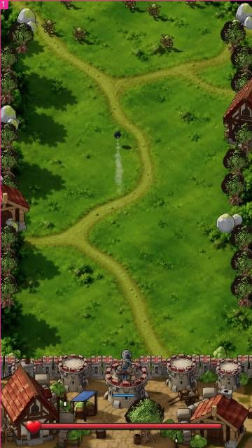 | S2, S3, S4, S5, S6, S7, S8, S9, S10, S11, S12, S13, S14, S15, S16 |
| 0:00.0–0:08.5 | pacing | high | Slow opening with empty battlefield It took 5.3s for the first input to visibly work, and two idle gaps occurred (0.5-3.5s and 4.5-8.5s) because goblins did not spawn until t=8.3s, leaving the player firing at an empty path. | Spawn the first wave of goblins and a red explosive barrel immediately at t=0.0s so the player's very first drag-to-aim shot hits a target right away. | 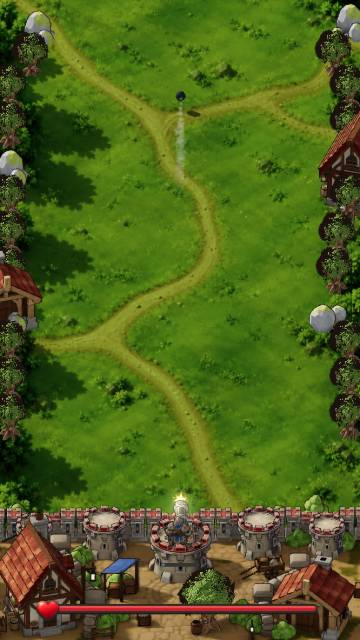 | S1, S18, S19 |
| 1:11.3 | pacing | medium | No end card shown within 71 seconds The session ran until the 71.3s time limit without ever presenting an end card or install CTA. | Trigger the end card with a clear 'Play Now / Install' CTA after the second upgrade wave or around 35-45 seconds of play. | S20 | |
| 0:47.0 | ui | medium | Upgrade popup interrupts active aiming At t=47.0s, the upgrade selection popup ('Central Cannon' and 'Castle Recovery') appeared mid-action while the player was aiming at approaching goblins, causing their input to have no visible effect. | Add a brief 0.5s input-lock grace period when the upgrade popup opens so stray gameplay drags do not get eaten or accidentally misclick an upgrade card. | 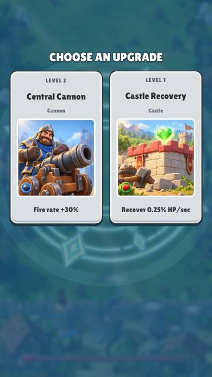 | S17 |
| time | saw | phase | planner | actions (with human reaction time) | notes | cost |
|---|---|---|---|---|---|---|
| 0:02.0 turn 1 | tutorial decider: tutorial 85% clarity 86% |
sees: Castle defense game with 'DRAG TO AIM' tutorial progress: First look at the game |
0:03.6 drag Drag to aim the cannon as instructed (+1643 ms) | Tower/cannon defense game. Drag to aim the cannon at the bottom. Goal: defend the castle. | 3.6s $0.0054 | |
| 0:05.3 turn 2 | gameplay decider: tutorial 54% clarity 73% last input worked: 76% |
sees: Cannonball flying up the path, no enemies visible yet progress: Cannon fired after drag |
0:05.3 wait Wait for enemies to appear on the path | Tower/cannon defense game. Dragging aims and fires the cannon. Waiting for enemies to spawn on the path. | 3.6s $0.0046 | |
| 0:08.3 turn 3 | gameplay decider: gameplay 94% clarity 21% last input worked: 90% |
sees: Enemies (goblins) are spawning at the top of the paths; a cannonball is flying up the middle. progress: Enemies appeared at the top and cannonball is in flight. |
0:08.7 drag Aim and fire cannon towards top-left enemies (+407 ms) 0:09.5 drag Aim and fire cannon towards top-right enemies (+357 ms) |
Tower/cannon defense game. Dragging from cannon area towards enemies aims and fires. Enemies spawning at top-left and top-right. | 4.3s $0.0066 | |
| 0:11.5 turn 4 | 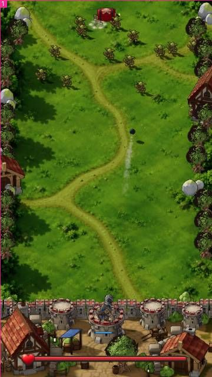 |
gameplay decider: gameplay 92% clarity 24% last input worked: 74% |
sees: Cannonball flying towards enemies; goblins advancing down paths progress: Cannon fired and ball is mid-air |
0:11.9 drag Aim and fire at top-right enemy group (+361 ms) 0:12.5 drag Aim and fire at top-left enemy group (+187 ms) |
Tower/cannon defense game. Dragging from cannon area [820, 500] towards enemies aims and fires. Enemies spawning at top-left and top-right. | 3.7s $0.0057 |
| 0:14.0 turn 5 | 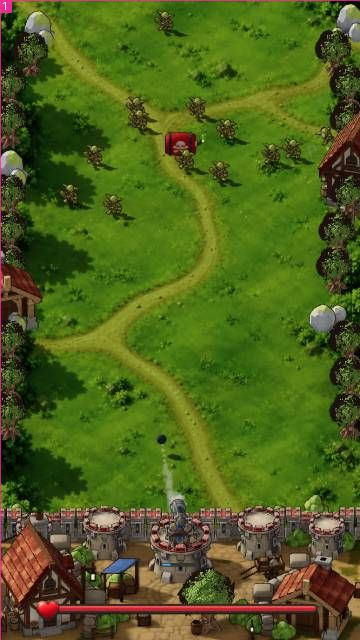 |
gameplay decider: gameplay 96% clarity 33% last input worked: 72% |
sees: Cannon firing at goblins; red explosive barrel at [225, 500] surrounded by goblins progress: Cannonball fired towards center |
0:14.5 drag Aim and fire at the red explosive barrel (+506 ms) 0:15.4 drag Aim and fire at left goblin group (+329 ms) 0:16.2 drag Aim and fire at right goblin group (+357 ms) |
Tower/cannon defense game. Dragging from cannon area [820, 500] towards enemies aims and fires. Red explosive barrel at [225, 500] can be shot. | 4.5s $0.0063 |
| 0:17.9 turn 6 | 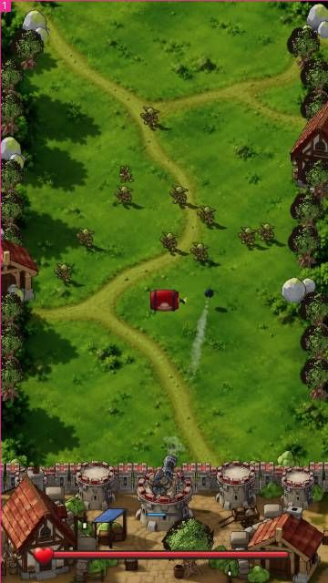 |
gameplay decider: gameplay 96% clarity 40% last input worked: 60% |
sees: Cannon firing at advancing goblins, red barrel in center progress: Cannonball flying right, goblins advancing |
0:18.4 drag Aim and fire at the red explosive barrel (+494 ms) 0:19.0 drag Aim and fire at left goblin group (+215 ms) 0:19.7 drag Aim and fire at right goblin group (+231 ms) |
Tower/cannon defense game. Dragging from cannon area [820, 500] towards enemies aims and fires. Red explosive barrel at [520, 500]. | 4.0s $0.0075 |
| 0:21.6 turn 7 | 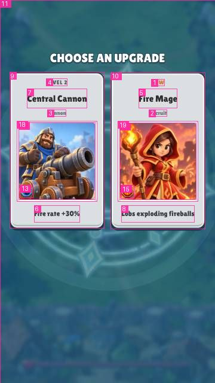 |
reward decider: reward 92% clarity 92% last input worked: 31% |
sees: Upgrade selection screen with Central Cannon and Fire Mage progress: Reached an upgrade selection screen after defeating enemies. |
0:23.1 tap “NEW Fire Mage Recruit Lobs exploding fir” Recruit the new Fire Mage (+1504 ms) | Tower/cannon defense game. Dragging from cannon area [820, 500] towards enemies aims and fires. Upgrade screen appeared; recruiting Fire Mage. | 3.9s $0.0056 |
| 0:24.5 turn 8 | 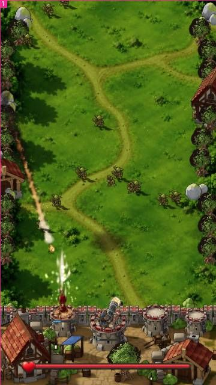 |
gameplay decider: gameplay 91% clarity 50% last input worked: 73% |
sees: Gameplay with Fire Mage active on left tower, goblins advancing in middle and right progress: Fire Mage recruited and firing. Returning to cannon defense. |
0:25.3 drag Aim and fire at middle goblin group (+840 ms) 0:26.0 drag Aim and fire at right goblin group (+280 ms) 0:26.6 drag Aim and fire at left goblin group (+286 ms) |
Tower/cannon defense game. Dragging from cannon area [820, 500] towards enemies aims and fires. Fire Mage is active on the left tower. | 4.4s $0.0064 |
| 0:28.0 turn 9 | 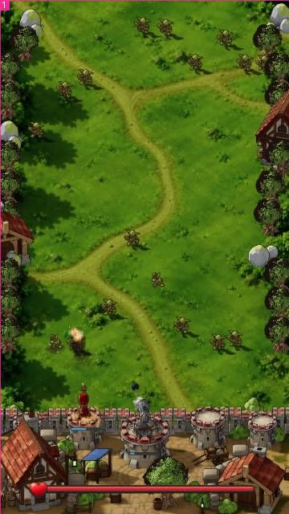 |
gameplay decider: gameplay 95% clarity 31% last input worked: 53% |
sees: Gameplay with goblins approaching on left, middle, and right progress: Shots fired, Fire Mage is attacking |
0:28.4 drag Aim and fire at bottom-right goblins (+466 ms) 0:29.1 drag Aim and fire at bottom-left goblins (+279 ms) 0:29.6 drag Aim and fire at middle goblin (+249 ms) |
Tower/cannon defense game. Dragging from cannon area [820, 500] towards enemies aims and fires. Fire Mage is active on the left tower. | 4.1s $0.0062 |
| 0:30.8 turn 10 | 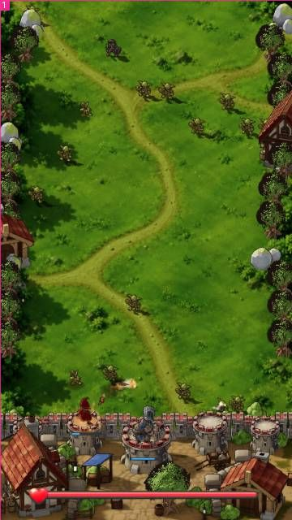 |
gameplay decider: gameplay 94% clarity 29% last input worked: 70% |
sees: Gameplay: goblins approaching the wall, Fire Mage on left tower, cannon in center. progress: Previous shots hit goblins, some are now close to the wall. |
0:31.2 drag Aim and fire at goblin near bottom-left wall (+456 ms) 0:31.9 drag Aim and fire at goblin near bottom-right wall (+379 ms) 0:32.4 drag Aim and fire at bottom-left goblin (+208 ms) 0:33.1 drag Aim and fire at middle goblin (+380 ms) |
Tower/cannon defense game. Dragging from cannon area [820, 500] towards enemies aims and fires. Fire Mage is active on the left tower. | 5.4s $0.0077 |
| 0:34.4 turn 11 | 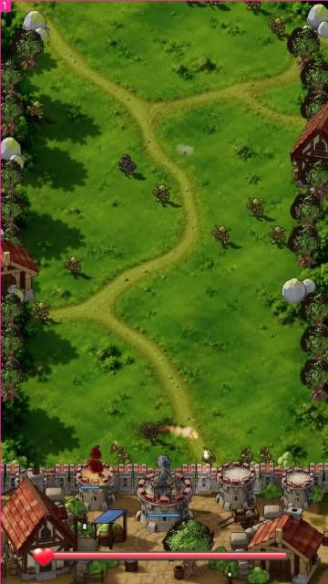 |
gameplay decider: gameplay 95% clarity 25% last input worked: 78% |
sees: Tower defense gameplay, goblins approaching the wall and mid-field progress: Fire mage and cannon are hitting goblins near the wall |
0:34.9 drag Aim and fire at goblin near bottom-center wall (+495 ms) 0:35.6 drag Aim and fire at goblin near bottom-left wall (+274 ms) 0:36.2 drag Aim and fire at goblin in mid-right field (+282 ms) |
Tower/cannon defense game. Dragging from cannon area [820, 500] towards enemies aims and fires. Fire Mage is active on the left tower. | 6.5s $0.0069 |
| 0:37.3 turn 12 | gameplay decider: gameplay 96% clarity 33% last input worked: 84% |
sees: Gameplay with goblins advancing, one near the bottom-right wall progress: Cannonball flying towards mid-field, fire mage shooting left |
0:38.0 drag Aim and fire at goblin very close to bottom-right wall (+721 ms) 0:38.7 drag Aim and fire at goblin on the mid-right (+328 ms) 0:39.3 drag Aim and fire at goblin in the center (+238 ms) |
Tower/cannon defense game. Dragging from cannon area [820, 500] towards enemies aims and fires. Fire Mage is active on the left tower. | 5.8s $0.0080 | |
| 0:40.4 turn 13 | 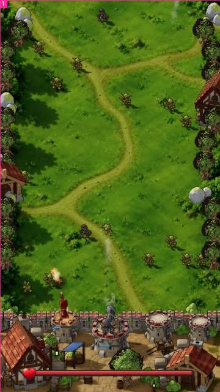 |
gameplay decider: gameplay 96% clarity 32% last input worked: 56% |
sees: Tower defense gameplay, goblins approaching bottom-left and bottom-right progress: Health is full, Fire Mage is helping on the left |
0:40.7 drag Aim and fire at goblin on the bottom-left (+315 ms) 0:41.3 drag Aim and fire at goblin on the bottom-right (+217 ms) 0:42.0 drag Aim and fire at another goblin on the bottom-right (+196 ms) |
Tower/cannon defense game. Dragging from cannon area [820, 500] towards enemies aims and fires. Fire Mage is active on the left tower. | 3.9s $0.0068 |
| 0:43.4 turn 14 | 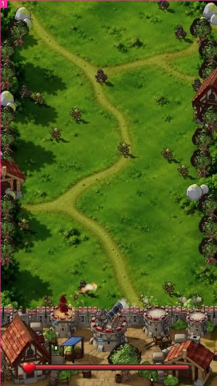 |
gameplay decider: gameplay 96% clarity 25% last input worked: 68% |
sees: Gameplay with goblins approaching the wall from multiple paths; Fire Mage is shooting. progress: Cleared some bottom goblins; more are approaching. |
0:44.6 drag Aim and fire at goblin near bottom-right wall (+1164 ms) 0:45.3 drag Aim and fire at enemy near bottom-left wall (+411 ms) 0:45.9 drag Aim and fire at goblin in the center (+313 ms) |
Tower/cannon defense game. Dragging from cannon area [820, 500] towards enemies aims and fires. Fire Mage is active on the left tower. | 5.2s $0.0069 |
| 0:47.0 turn 15 | 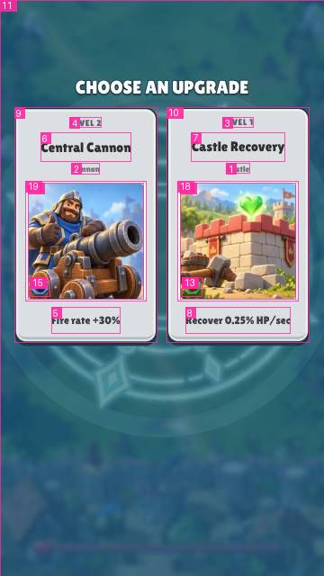 |
reward decider: reward 93% clarity 88% last input worked: 24% |
sees: Upgrade selection popup with Central Cannon and Castle Recovery progress: Leveled up and triggered upgrade selection |
0:48.0 tap “LEVEL 2 Central Cannon Cannon Fire rate ” Select Central Cannon Fire rate +30% upgrade (+1008 ms) | Tower/cannon defense game. Dragging from cannon area [820, 500] towards enemies aims and fires. Fire Mage is active on the left tower. Upgrading Central Cannon fire rate. | 3.2s $0.0057 |
| 0:48.9 turn 16 | 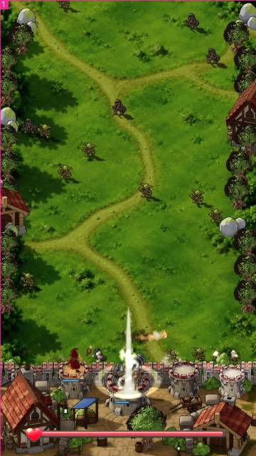 |
gameplay decider: gameplay 90% clarity 54% last input worked: 77% |
sees: Gameplay with enemies approaching the bottom wall and in the middle progress: Upgrade applied, back to defending the wall |
0:49.9 drag Aim and fire at enemy near bottom-left wall (+992 ms) 0:50.7 drag Aim and fire at enemy near bottom-right wall (+363 ms) 0:51.2 drag Aim and fire at goblin on center path (+224 ms) |
Tower/cannon defense game. Dragging from cannon area [820, 500] towards enemies aims and fires. Fire Mage is active on the left tower. Central Cannon fire rate upgraded. | 3.9s $0.0064 |
| 0:52.7 turn 17 | 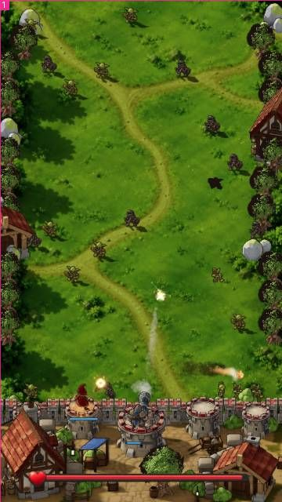 |
gameplay decider: gameplay 97% clarity 33% last input worked: 80% |
sees: Gameplay with enemies approaching the bottom wall and along the center path progress: Cannon fired and hit enemies, more enemies are approaching |
0:53.1 drag Aim and fire at enemy near bottom-left wall (+345 ms) 0:53.7 drag Aim and fire at enemy near bottom-right wall (+244 ms) 0:54.4 drag Aim and fire at goblin on center-left path (+285 ms) |
Tower/cannon defense game. Dragging from cannon area [820, 500] towards enemies aims and fires. Fire Mage is active on the left tower. Central Cannon fire rate upgraded. | 5.3s $0.0067 |
| 0:55.7 turn 18 | 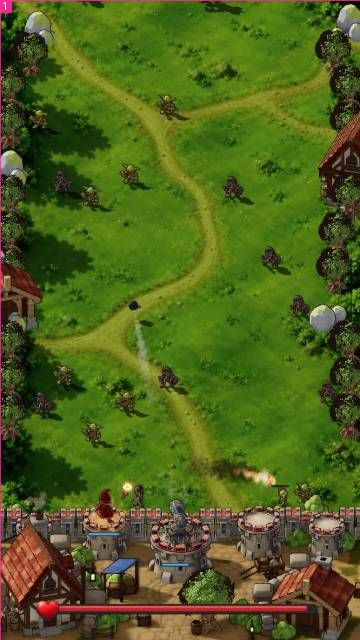 |
gameplay decider: gameplay 96% clarity 35% last input worked: 59% |
sees: Gameplay with enemies approaching the wall and cannon firing progress: Shots fired, enemies still approaching |
0:56.4 drag Aim and fire at enemy near bottom-left wall (+705 ms) 0:56.9 drag Aim and fire at enemy near bottom-right wall (+263 ms) 0:57.5 drag Aim and fire at enemy on lower center path (+231 ms) 0:58.0 drag Aim and fire at enemy on lower left path (+182 ms) |
Tower/cannon defense game. Dragging from cannon area [820, 500] towards enemies aims and fires. Fire Mage is active on the left tower. Central Cannon fire rate upgraded. | 5.6s $0.0077 |
| 0:59.3 turn 19 | 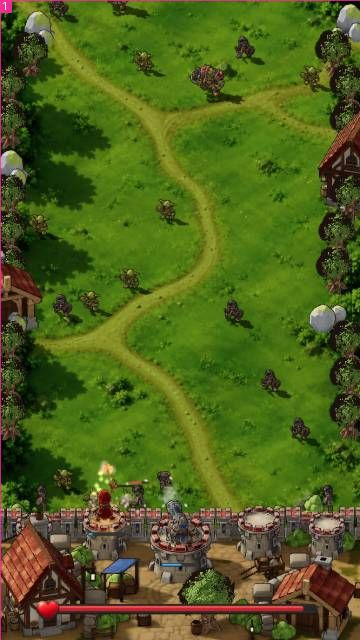 |
gameplay decider: gameplay 96% clarity 28% last input worked: 78% |
sees: Gameplay with enemies near the wall and approaching along the paths progress: Cannon fired, wall health is still high |
0:59.9 drag Aim and fire at enemy right in front of cannon (+594 ms) 1:00.6 drag Aim and fire at enemy near left tower (+394 ms) 1:01.3 drag Aim and fire at enemy near right wall (+347 ms) 1:01.9 drag Aim and fire at enemy on lower right (+221 ms) |
Tower/cannon defense game. Dragging from cannon area [820, 500] towards enemies aims and fires. Fire Mage is active on the left tower. Central Cannon fire rate upgraded. | 4.7s $0.0072 |
| 1:03.4 turn 20 | 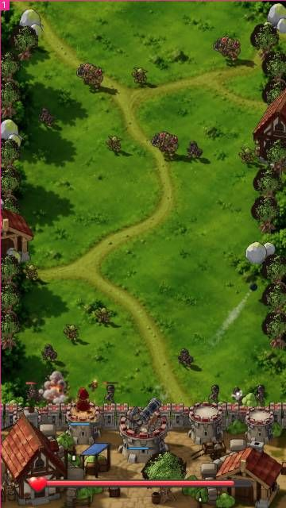 |
gameplay decider: gameplay 97% clarity 37% last input worked: 87% |
sees: Enemies attacking the wall and approaching from all sides progress: Firing cannonballs at approaching enemies, health bar still mostly full |
1:03.8 drag Aim and fire at enemies at the left wall (+380 ms) 1:04.5 drag Aim and fire at enemies at the right wall (+386 ms) 1:05.1 drag Aim and fire at enemy approaching lower right (+286 ms) 1:05.7 drag Aim and fire at enemy approaching lower left (+264 ms) |
Tower/cannon defense game. Dragging from cannon area [820, 500] towards enemies aims and fires. Fire Mage is active on the left tower. Central Cannon fire rate upgraded. | 4.6s $0.0076 |
| 1:06.9 turn 21 | 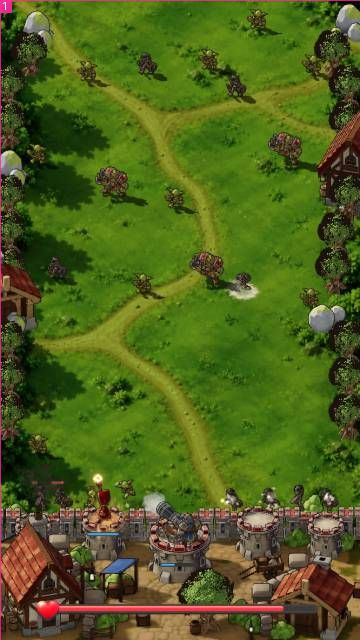 |
gameplay decider: gameplay 96% clarity 25% last input worked: 80% |
sees: Gameplay with enemies attacking the wall on the right and left progress: Cannon fired, enemies still at the wall |
1:08.1 drag Aim and fire at enemies at the right wall (+1185 ms) 1:08.8 drag Aim and fire at enemies at the far right wall (+375 ms) 1:09.4 drag Aim and fire at enemies at the left wall (+330 ms) |
Tower/cannon defense game. Dragging from cannon area [820, 500] towards enemies aims and fires. Fire Mage is active on the left tower. Central Cannon fire rate upgraded. | 3.6s $0.0063 |
Files: raw.mp4 · highlight.mp4 · candidates/ · moments.json · game_model.json · edl_*.json · eval.json · friction.json/.md · plans.jsonl · actions.jsonl · observations.jsonl · decisions in plans.jsonl · ledger.jsonl · trace.jsonl · obs/